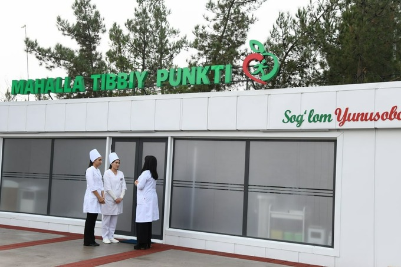

"Chekka hududlarda mobil poliklinikalar"
Olis qishloqlarda yashovchi aholi uchun avtobuslar ko'rinishidagi zamonaviy tibbiy markazlar xizmatda.
2026-yilga kelib O‘zbekistonda chekka va olis hududlar aholisiga tibbiy xizmat ko‘rsatish tizimi mutlaqo yangi bosqichga ko‘tarildi, ayniqsa, "mobil poliklinikalar" va g‘ildirak ustidagi zamonaviy tibbiy markazlar bu islohotlarning markaziy bo‘g‘iniga aylandi. Bugungi kunda respublikaning eng chekka ovullari va tog‘li qishloqlariga yetib borayotgan bu maxsus avtobuslar shunchaki ko‘rik xonasi emas, balki eng so‘nggi texnologiyalar bilan jihozlangan "aqlli" klinikalardir.

Mazkur mobil majmualar tarkibiga raqamli rentgen, UTT (UZI) apparatlari, kardiografiya uskunalari va hattoki kichik hajmdagi laboratoriyalar kiritilgan bo‘lib, ular aholiga o‘z yashash joyidan uzoqlashmagan holda chuqurlashtirilgan tibbiy ko‘rikdan o‘tish imkonini bermoqda. 2026-yilgi davlat dasturi doirasida bu avtobuslar sun’iy yo‘ldosh aloqasi orqali poytaxtdagi ixtisoslashtirilgan markazlar bilan bog‘langan, bu esa olis qishloqdagi bemorning tahlillarini real vaqt rejimida Respublika darajasidagi malakali mutaxassislar tomonidan masofaviy (telemeditsina) ko‘rib chiqilishini ta’minlaydi. Ayniqsa, ayollar va bolalar salomatligini muhofaza qilish maqsadida tashkil etilgan "Ona va bola" mobil brigadalari hamda sil kasalligini erta aniqlashga mo‘ljallangan "O‘pka salomatligi" ko‘chma rentgen-avtobuslari tizimli ravishda barcha hududlarni qamrab olmoqda. Bu tizimning yana bir muhim jihati shundaki, 2026-yildan boshlab joriy etilgan raqamlashtirilgan sog‘liqni saqlash tizimi tufayli mobil poliklinikada ko‘rikdan o‘tgan har bir fuqaroning ma’lumotlari avtomatik ravishda uning elektron tibbiy kartasiga tushadi va zarur hollarda elektron retseptlar ham shu yerning o‘zida rasmiylashtiriladi. Shuningdek, ushbu ko‘chma markazlar nafaqat tashxis qo‘yish, balki katarakta kabi ko‘z kasalliklarini operatsiya qilish imkoniyatiga ega bo‘lgan "ko‘chma oftalmologik jarrohlik" bo‘limlari bilan ham boyitilgan. Bunday yondashuv shahar va qishloq o‘rtasidagi tibbiy xizmat ko‘rsatish sifatidagi tafovutni keskin kamaytirib, minglab insonlarning sog‘ligini erta bosqichlarda saqlab qolishga xizmat qilmoqda.